Interactive world models
RGB, depth and, per sequence, the recorded camera and action stream — camera conditioning is exact, and third-person separates the camera from the acting subject.
Preview Release · 2026
A Scalable Synthetic Video Data Engine for World Exploration
with Rich Annotations
A rendering engine and a 10M-frame dataset of explorable worlds — one traversal through an artist-built environment, re-observed from any viewpoint and appearance, where every frame carries exact geometry, motion, camera and control.
1 Alaya Lab · 2 The University of Tokyo ·
3 Shanghai Innovation Institute
* Equal contribution · † Corresponding authors
The data problem
Interactive world models and dynamic 4D reconstruction have converged on the same requirement. Real capture supplies realism but no per-pixel ground truth; existing synthetic corpora supply ground truth but are narrow, static in lighting, locked to one viewpoint, or missing the correspondence and control signals these problems depend on. WorldRover is a rendering system — WorldRover-Engine, built on Unreal Engine 5.5 and SPEAR, and WorldRover-10M, the dataset it produced. It moves a camera along a route through an artist-built environment and renders the traversal offline, so every output is a by-product of rendering: the dataset grows by configuration and compute rather than by manual labelling.
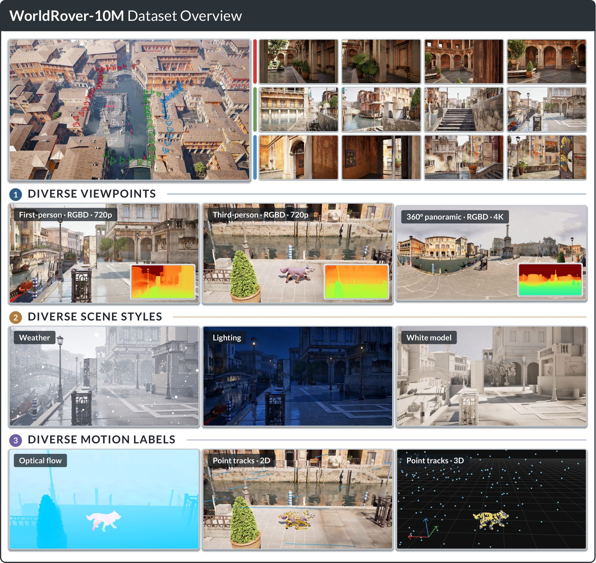
WorldRover-Engine
The architecture separates an editor side — where each scene is ingested, stylized into fixed lighting and weather states, and given a baked navigation mesh — from a generation side that renders offline on a multi-GPU host, accumulating sub-samples per frame so global illumination converges and frames hold still.
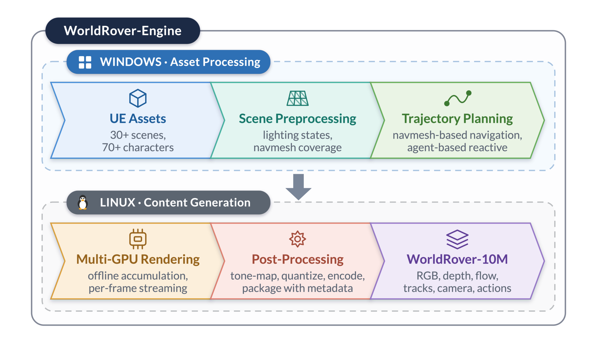
Three camera viewpoints
The editor records one first-person camera trajectory per route, and the other two viewpoints are rendered from that same recording — three observations of the same walk, at the same instants and under the same scene and lighting.
An eye-height camera rides the trajectory itself. The camera is the agent, so imagery, pose and the action stream are mutually consistent by definition — matching egocentric video and embodied navigation.
An animated character replays the recorded path while a follow camera holds a fixed world azimuth. Camera and character move independently, with exact ground truth for both — the setting of 4D reconstruction of a deforming subject.
Equirectangular video at 4096×2048, assembled from six perspective cube faces in linear light, with no field-of-view choice baked in — sharing camera centres with the first-person view.
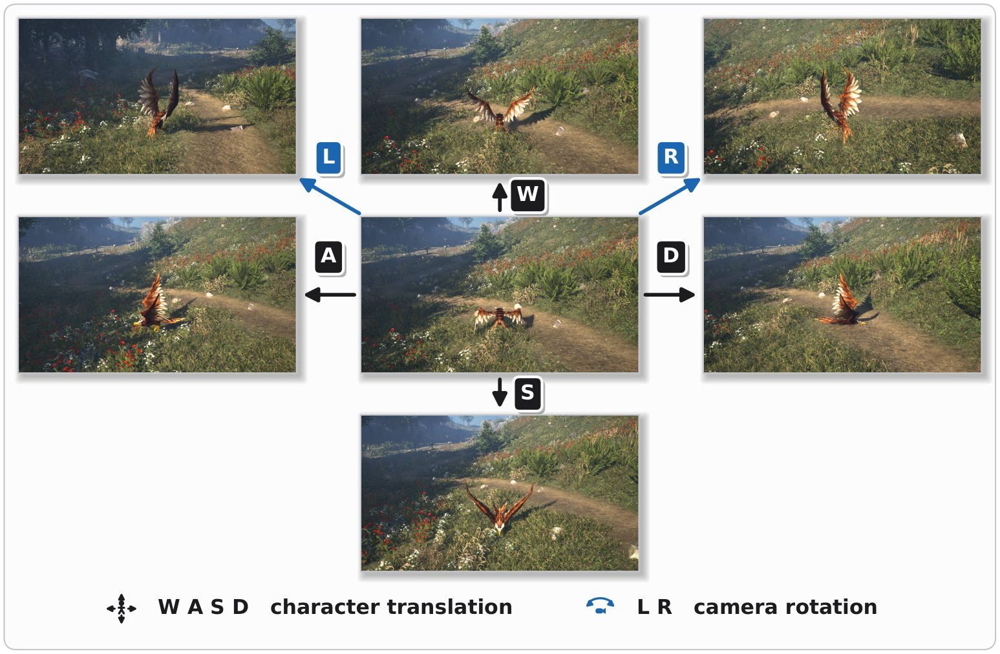
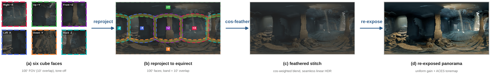
Multimodal data & annotations
Movie Render Queue renders each frame through a single configuration that writes colour, a depth layer and a velocity layer into one multi-layer EXR. Colour, depth and motion are therefore the same rasterization of the same instant, and the camera annotation is the camera that produced that frame.
Photorealistic colour under dynamic Lumen global illumination, offline-accumulated. First/third-person at 1280×720; panoramic at 4096×2048.
Radial distance in metres, log-quantized to 16 bits over 0.1–200 m — a ~0.12 mm step at 1 m — encoded losslessly with a decode sidecar.
Dense ground-truth screen-space motion from the engine's velocity buffer, exact even on untextured surfaces, repetitive structure and large displacements (third-person).
Geometric, not matched: 3D position, 2D projection and a visibility flag per frame, held amodally through occlusion — never lost, never drifting (third-person).
Per-frame position, orientation and intrinsics of the camera actually rendered — camera conditioning is exact rather than estimated.
The control signal that would have produced the motion — analog axis events for forward, lateral, turning and vertical motion, aligned to the trajectory.
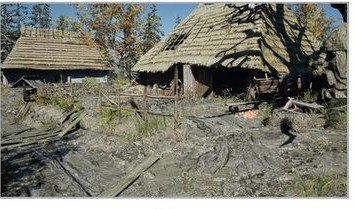
illustrativePhotorealistic colour under dynamic Lumen global illumination — first/third-person at 1280×720, panoramic at 4096×2048.
| Data, when present | Contents |
|---|---|
| RGB video | H.264, hardware-encoded |
| Depth | 16-bit log-quantized, FFV1 lossless, + decode sidecar |
| Optical flow | 16-bit affine-quantized, FFV1 lossless, + sidecar (third-person only) |
| Point tracks | per-track 3D position, 2D projection and visibility, per frame (third-person only) |
| Camera trajectory | per-frame pose and intrinsics of the rendered camera |
| Character trajectory | per-frame pose and speed (third-person only) |
| Action stream | quantized axis events + binding snapshot |
| Description | environment, camera, lighting and render metadata |
| Route preview | plan view of the trajectory |
Appearance as a variable
Because lighting is simulated at render time with Lumen rather than baked, re-rendering a moment under another state changes the image physically, not by recolouring — so appearance-induced error can be separated from geometry-induced error.
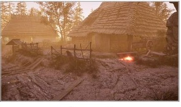
Sunset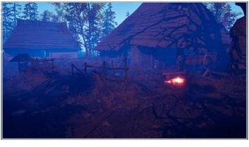
Night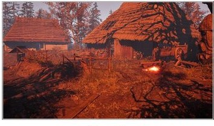
Firelit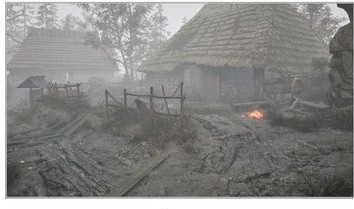
FogDiverse appearances. The same first-person frame, from an identical camera at the same instant, under five environmental states. Indirect illumination and shadow softness respond correctly; exposure is held fixed, so Night stays genuinely dark.
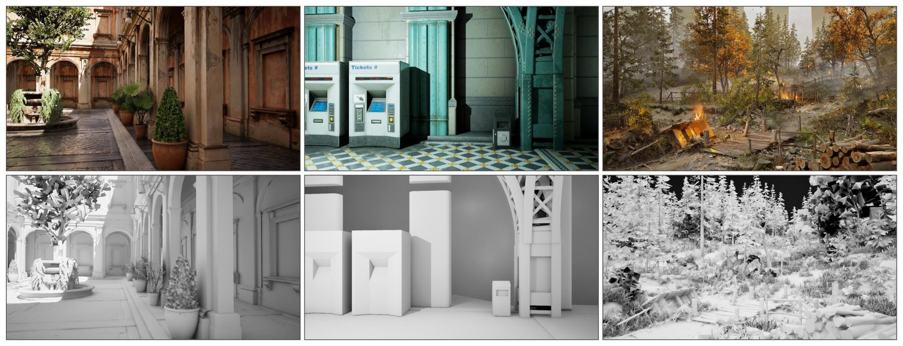
Diversity & scale
WorldRover takes the artist-built side of the photorealism-vs-diversity trade-off and buys quantity back through combinatorics — scenes × states × viewpoints × characters × routes — so imagery stays film-grade while the dataset keeps growing.
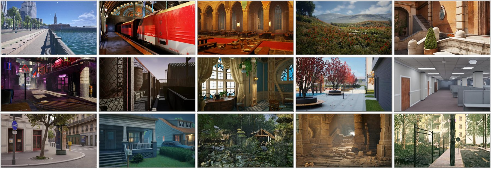
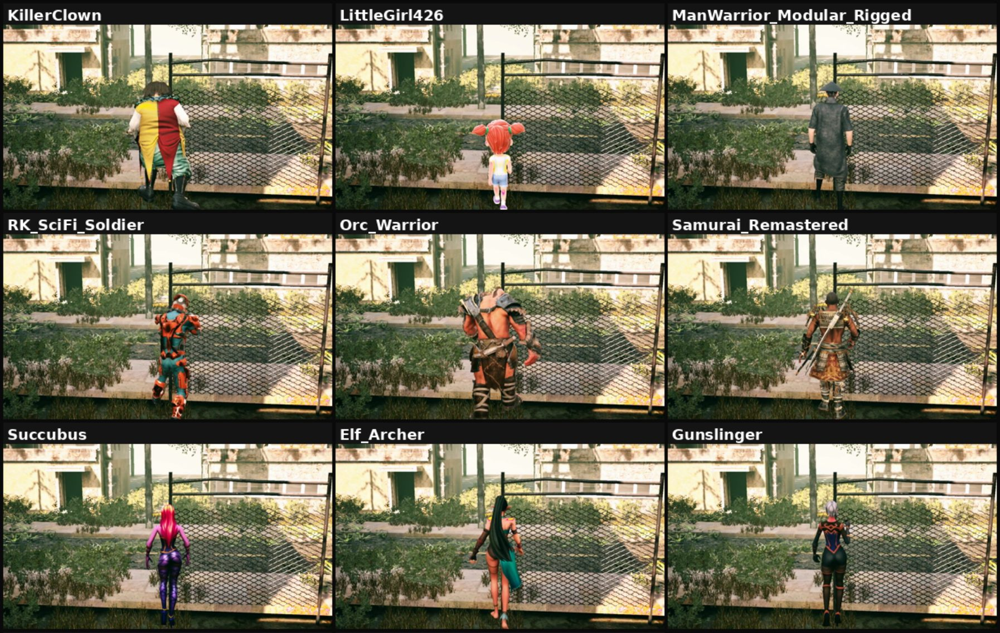
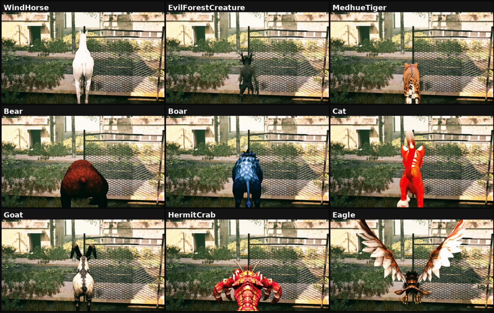
| Axis | Values |
|---|---|
| Environments | 30+ artist-built UE scenes, interior to city scale |
| Lighting states | day, dawn, evening, sunset, night |
| Weather states | clear, overcast, fog, snow |
| Appearance | textured render, or untextured white model |
| Characters | 70+ animated humanoids, animals and creatures |
| Routes | navmesh planner, reactive explorer, manual recording |
| Scales by | scene × state × character × route × viewpoint |
Applications
RGB, depth and, per sequence, the recorded camera and action stream — camera conditioning is exact, and third-person separates the camera from the acting subject.
Dense flow and long-range tracks through occlusion, over an articulated deforming subject observed by an independently moving camera, with ground truth for both.
The white model pairs coarse structure with the finished image frame-for-frame; the appearance axes extend the pairing across day, night, fog and snow.
Preview release
The preview establishes the data schema and the validated annotation scope. Paper, dataset and release schedule are on the way — code and updates live on GitHub.
@article{worldrover2026,
title = {WorldRover: A Scalable Synthetic Video Data Engine
for World Exploration with Rich Annotations},
author = {Xu, Xiaojie and Lin, Zhengyuan and Li, Runyi and
Liu, Yihao and Zhang, Kaipeng and Ge, Yongtao},
journal = {arXiv preprint},
year = {2026}
}